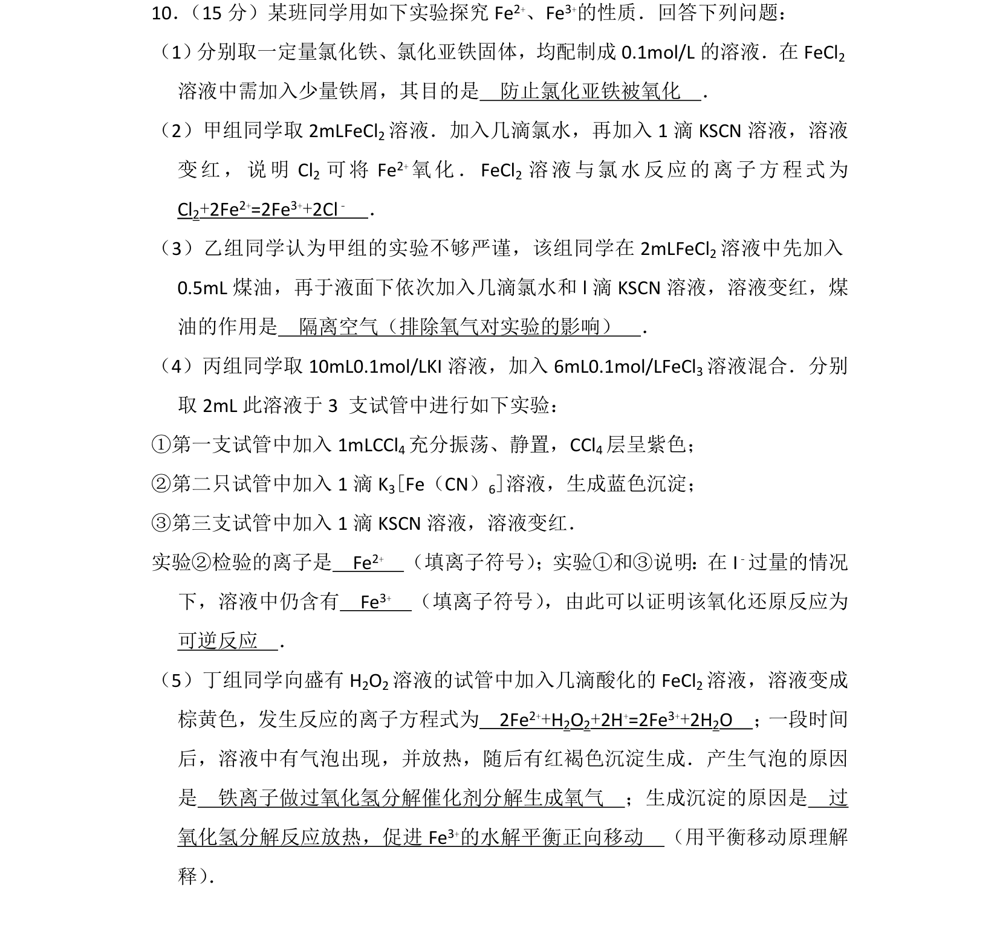
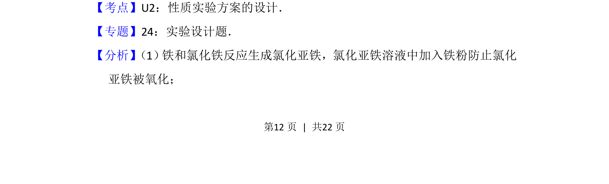
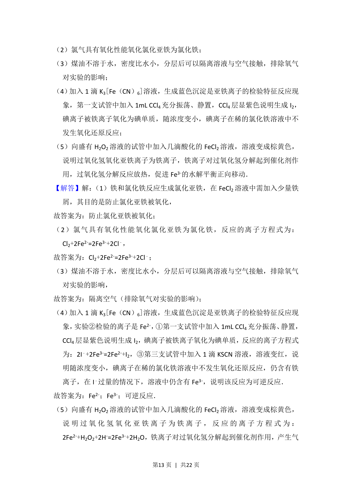
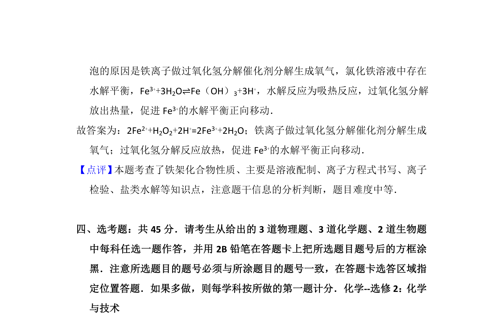

考点：性质实验方案设计 氧化还原反应 离子反应

考查铁离子与亚铁离子的性质实验方案设计与探究。



📄 原 PDF 第 12 页：
素材/真题/吉林/2008-2024·（吉林）化学高考真题/2016年高考化学试卷（新课标Ⅱ）（解析卷）.pdf
10． （15分）某班同学用如下实验探究Fe2+、Fe3+的性质．回答下列问题： （1） 分别取一定量氯化铁、氯化亚铁固体，均配制成0.1mol/L的溶液．在FeCl2 溶液中需加入少量铁屑，其目的是 防止氯化亚铁被氧化 ． （2）甲组同学取2mLFeCl 2溶液．加入几滴氯水，再加入1滴KSCN溶液，溶液 变红，说明Cl 2 可将Fe 2+氧化．FeCl 2 溶液与氯水反应的离子方程式为 Cl2+2Fe2+=2Fe3++2Cl﹣ ． （3）乙组同学认为甲组的实验不够严谨，该组同学在2mLFeCl 2溶液中先加入 0.5mL煤油，再于液面下依次加入几滴氯水和l滴KSCN溶液，溶液变红，煤 油的作用是 隔离空气（排除氧气对实验的影响） ． （4）丙组同学取10mL0.1mol/LKI溶液，加入6mL0.1mol/LFeCl 3溶液混合．分别 取2mL此溶液于3 支试管中进行如下实验： ①第一支试管中加入1mLCCl 4充分振荡、静置，CCl4层呈紫色； ②第二只试管中加入1滴K 3[Fe（CN）6]溶液，生成蓝色沉淀； ③第三支试管中加入1滴KSCN溶液，溶液变红． 实验②检验的离子是 Fe2+ （填离子符号） ；实验①和③说明：在I﹣过量的情况 下，溶液中仍含有 Fe3+ （填离子符号） ，由此可以证明该氧化还原反应为 可逆反应 ． （5）丁组同学向盛有H 2O2溶液的试管中加入几滴酸化的FeCl 2溶液，溶液变成 棕黄色，发生反应的离子方程式为 2Fe2++H2O2+2H+=2Fe3++2H2O ； 一段时间 后，溶液中有气泡出现，并放热，随后有红褐色沉淀生成．产生气泡的原因 是 铁离子做过氧化氢分解催化剂分解生成氧气 ；生成沉淀的原因是 过 氧化氢分解反应放热，促进Fe 3+的水解平衡正向移动 （用平衡移动原理解 释） ．
【考点】U2：性质实验方案的设计．菁优网版权所有 【专题】24：实验设计题． 【分析】 （1） 铁和氯化铁反应生成氯化亚铁，氯化亚铁溶液中加入铁粉防止氯化 亚铁被氧化；